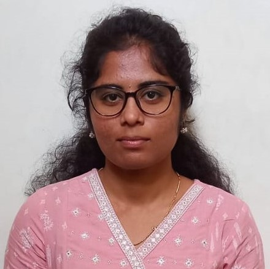

Resume
Divya M.S
Objective
Ambitious and adaptable graduate with a Bachelor's degree in Electronics and Communication with stronginterpersonal skills and a passion for learning.
Education
Geetha Shishu Shikshana Sangha | Mysuru
B.E, Electronics and Communication | CGPA 7.18/10 (2024)
Jnanodaya P U College | Mysuru
PUC, Science | Percentage 84.16/100 (2020)
Pragathi Vidya Kendra | Mysuru
SSLC | Percentage 92.48/100 (2018)
Technical Skills
Programming Languages: C Programming, Verilog, MySQL,HTML
Operating System: Arduino Uno, Keil u Vision
Professional Experience
Internship | Varcons Technologies | Bengaluru
- Learnt writing and uploading programs to the Arduino board using the various libraries and functionsprovided by the platform.
- Developed a C++ code and implementing various algorithms and logic to control hardwarecomponents.
Academic Projects
Generation of Electricity from Waste Materials using IoT
- Implemented a system to harness Electricity from Waste Materials and Integrating IoT technology tooptimize and monitor the process
- Demonstrated the voltage generated from burning waste materials using the Blynk app.
Electronic Voting Machine Using Arduino.
- Designed an Electronic Voting Machine (EVM) using Arduino to create a secure, reliable, and user friendly platform for conducting elections.
- Developed a C++ code that facilitated vote casting, counting, and result displaying, ensuring a transparent and efficient voting process.
Smart Patient Health Monitoring System using IoT.
- Implemented a system to monitor pulse rate and body temperature of patients using a pulse sensor and a temperature sensor.
- Transmitted the detected biomedical information to a server called Thing Speak, which facilitated easy data reading.
Presentations
Generation of Electricity by Waste Materials Using IoT
- Presented project titled "Generation of Electricity by Waste Materials Using IoT" at the 8th National LevelProject Competition, "IEEE PROJECT EXPO 2024", held on May 3, 2024 at GSSSIETW, Mysuru.
Certifications
- Introduction To Cryptography by Great Learning, July 2024.
Interests
- Reading novels, Paper crafts, Music and Movie enthusiast.
About Me
Contact Me